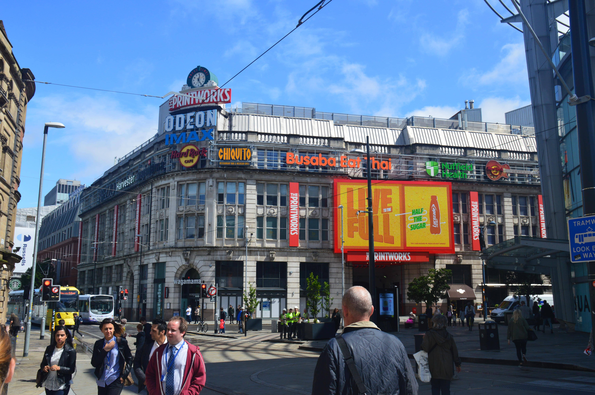
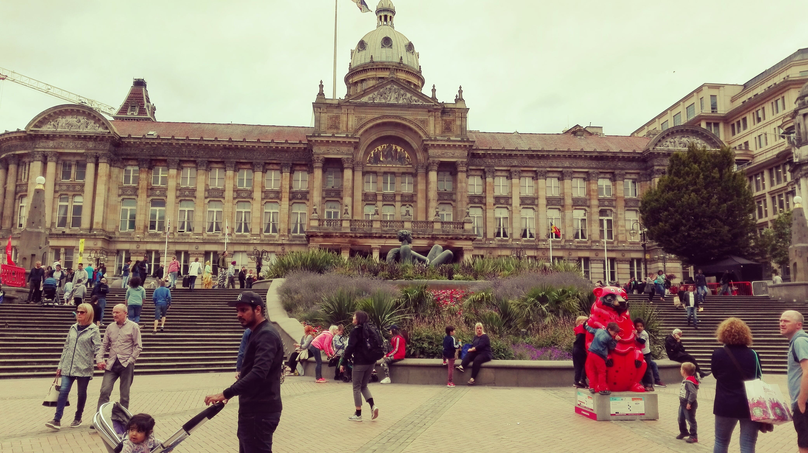

England
Die erste gemeinsame Reise
Auf Vorschlag unseres Gastgebers gingen wir zu einem nahegelegenen Kanal, welcher uns direkt in die Stadt führen sollte. Trotz des Regens fiel einem das dichte Grün an den Seiten des Kanals auf, irgendwie erbrachten die Pflanzen dem ganzen einen schönen Charme. Wie sich später aber herausstellen sollte, blieben weitere große Grünflächen Mangelware. Umso näher wir der Innenstadt kamen, desto mehr dominierten Büro- und Bankgebäude (so zumindest unsere Vermutung). Manchester war nicht schlecht, wir fanden schöne alte Gebäude und Kirchen, einen Pub, in dem wir uns recht lange aufhielten und im Endeffekt ist sogar noch die Sonne rausgekommen. Alles in allem, war Manchester vollkommen in Ordnung, doch bekam man das Gefühl, dass die Leute sehr „Business like“ und gestresst unterwegs waren .. uns fehlte einfach das gewisse Etwas.
Nächster Halt war Birmingham, welchen wir per Bus am 27. Juli erreichten. Auch hier entwickelten sich die Tage wie in Manchester, als Erstes suchten wir unser AirBnB, welches auch hier wieder etwas außerhalb der Stadt lag, aber dennoch gut zu Fuß zu erreichen war. Am nächsten Morgen entschieden wir uns für unser erstes „richtige“ english breakfast in der Innenstadt von Birmingham. Vielleicht lag es an der morgendlichen Sonne, doch bereits auf dem Hinweg schien unsere zweite Stadt irgendwie ruhiger und gemütlicher. Nach dem Frühstück befanden wir uns in einer belebten Innenstadt mit kleinen Einkaufsstraßen, festen Fußgängerzonen und vielen Bärenstaturen.
 Uns ist zwar nicht ganz bekannt warum, aber in der gesamten Innenstadt waren viele Bärenstaturen aufgebaut und mit z.b. Flaggen versehen. Zum Abend hin, zogen sich die Wolken aber etwas zu, weshalb wir uns in den sehr modern aussehenden Bahnhof zurückzogen, um dort noch ein wenig Sushi vom Band zu essen (dies sollte nicht das letzte Mal sein). Nach einem schönen Tag hieß es für uns aber wieder, am nächsten Morgen, „auf Wiedersehen“ zu sagen, denn auf den nächsten Halt freute sich vor allem meine Freundin sehr, denn es war Cambridge.
Uns ist zwar nicht ganz bekannt warum, aber in der gesamten Innenstadt waren viele Bärenstaturen aufgebaut und mit z.b. Flaggen versehen. Zum Abend hin, zogen sich die Wolken aber etwas zu, weshalb wir uns in den sehr modern aussehenden Bahnhof zurückzogen, um dort noch ein wenig Sushi vom Band zu essen (dies sollte nicht das letzte Mal sein). Nach einem schönen Tag hieß es für uns aber wieder, am nächsten Morgen, „auf Wiedersehen“ zu sagen, denn auf den nächsten Halt freute sich vor allem meine Freundin sehr, denn es war Cambridge.